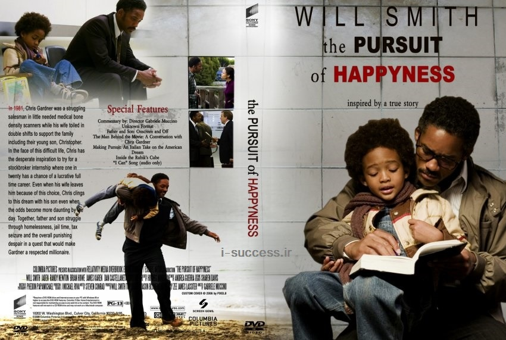

The story of this film is about a teenage boy named Harry Potter, who was killed by a demonic wizard named Voldemort, his mother and wizard father at the time of his birth, and there are eight series.play
The story of this film is about a teenage boy named Harry Potter, who was killed by a demonic wizard named Voldemort, his mother and wizard father at the time of his birth, and there are eight series.play The story of this film is about a teenage boy named Harry Potter, who was killed by a demonic wizard named Voldemort, his mother and wizard father at the time of his birth, and there are eight series.play
Full description: "The Pursuit of Happiness" is an American biographical drama film made in 2006, directed by Gabriel Mookie Ackerton and starring Will Smith. This film is based on the true story of Chris Gardner, a single working father who He is trying to build a better life for himself and his son. play
 Synopsis: The film Oppenheimer directed by Christopher Nolan was made in 2023. This movie is in the biographical drama genre. Florence Pugh, Cillian Murphy, David Krumholtz, Emily Blunt, Gary Eldman, Robert Downey Jr., Jack Quaid, Matt Damon, James Remar, and Kenneth Branagh star in this movie. play
Synopsis: The film Oppenheimer directed by Christopher Nolan was made in 2023. This movie is in the biographical drama genre. Florence Pugh, Cillian Murphy, David Krumholtz, Emily Blunt, Gary Eldman, Robert Downey Jr., Jack Quaid, Matt Damon, James Remar, and Kenneth Branagh star in this movie. play